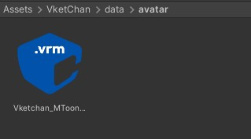

VKC Activity Exporter
VKC Activity ExporterはActivityをエクスポートするためのSDKツールです。このツールを使用してVKCActivityExporterオブジェクトを作成することで、Activityのエクスポートが可能となります。
エクスポートされたActivityはHEOActivityを使用してワールド内に複数展開できるほか、フォルダのzipファイル / Unitypackage化によってVket StoreやVket Cloudマイページからアクセスできる「アセットストア」などに公開することで他のユーザーとも共有が可能です。
Activityの概要と使い方についてはHEOActivityをご参照ください。
使い方
-
HierarchyでActivityとしてエクスポートしたいオブジェクトをまとめて選択します。

-
オブジェクトを選択した状態で右クリックして、
Export as Activity(日本語名：アクティビティとしてエクスポート)を選択します。
注意として、選択されたオブジェクトにActivityに含められるHEOコンポーネントがアタッチされている場合において
Export as Activityが選択可能になります。Activityに含められるHEOコンポーネントの一覧は後述のActivityに含められるHEOコンポーネントをご参照ください。
-
Export as ActivityをクリックするとVKC Activity Exporterオブジェクトを作成します。
選択されたオブジェクトはVKC Activity Exporterオブジェクトの子オブジェクトに移動します。
Activityのエクスポート方法

VKC Activity Exporterのインスペクターでエクスポートできます。
| 名称 | 機能 |
|---|---|
| HeliScript | HeliScriptの追加/削除ができます。 追加されたHeliScriptはHEOScriptと同様に使用できます。 |
| Motion | Motionの追加/削除ができます。 追加されたモーションはアクティビティのjsonファイルに記載され、プレイヤーに対してPlayer.ChangeActivityMotion()またはPlayer.SetNextActivityMotion()を実行するとプレイヤーがモーションを再生します。 |
| Thumbnail | Activityのサムネイルを設定できます。 画像が「.png」ファイルではない場合は、Warningを表示します。 |
HEOObjectにVRMを設定しActivityをエクスポートした際のビルドエラーについて
Ver12.x現在、HEOObjectにVRMを設定してActivityを書き出した際に、ファイルの読み込みエラーに由来するビルドエラーの発生が確認されています。
本不具合については次回のSDKにて修正が予定されています。
回避方法として、後述のdataフォルダ下にモデルデータを配置してjsonを手動で書き換えることでビルドエラーの回避が可能です。

{
"scripts": [],
"motions": {},
"items": [
{
"name": "GameObject",
//filenameをdata/avatar下のvrmファイル名に書き換え
"filename": "./data/avatar/Vketchan_MToon_blendshape.vrm",
"pose": "",
// 以下省略
エクスポート
Activity Exporter下部の「Export」ボタンをクリックすると、Activityのエクスポートが始まります。
-
エクスポートのフォルダを選択します。選択されたフォルダの名前はActivityファイルの名前として使用されるため、空のフォルダを作成して命名することを推奨します。

-
フォルダを選択すると、Activityのエクスポートが始まります。エクスポートが完了すると、以下のメッセージが表示されます。

フォルダにエクスポートされるファイル

Activityをエクスポートする際に指定したフォルダ内では以下のファイルが生成されます。
-
フォルダ名と同名のJSONファイル（Activityの構成を定義付けます）
-
日本語版READMEファイル (以下、英語版READMEと共にアクティビティを外部配布する際にご自由に書いた上でご使用ください)
-
英語版READMEファイル
-
dataフォルダ
Activityで使っているテクスチャ、3Dモデル、HeliScriptなどのアセットはdataフォルダに格納されます。
Activityを他のクリエイターに配布する際は、このフォルダをzipもしくはUnitypackageに圧縮/変換した上で配布を行います。
なお、配布の際はdataフォルダ下のテクスチャ/3Dモデルなどのデータが第三者の著作権等を侵害しないこと、Vket Cloudエンジン利用規約を十分確認した上で配布を行ってください。
Activity / Propertyの設定について
HEOActivityにてアクティビティを使用する際、設定のためにActivityのOverrides(Property)項目を定義し、HeliScriptにて参照することができます。
Propertyを追加するには編集したいアクティビティのjsonファイルを開き、propertiesに例として以下のようにキーと値を追加のうえで保存します。
//中略
"components": [],
"properties": {
"isShowVketChan":"0",
"VketChanName":"VketChan 01",
"VketChanCount":"1"
},
"lookatcamera": false,
//中略
設定したPropertyはHEOActivityにてアクティビティのjsonを読み込んだ際にoverridesにて表示され、ワールド制作者がアクティビティの設定に使用できます。

また、各PropertyはHeliScriptにてItem.GetProperty()およびItem.SetProperty()を使用して参照と書き込みができます。
なお、Propertyのキー及び値は必ずstring型で返されるため、別の変数型で扱いたい場合は型変換を行ってください。
component VketChan
{
Item m_Item; //自分自身
//Activityのパラメーター
string isShowVketChan;
public VketChan()
{
//hsSystemOutput("アクティビティ読み込み完了" + "\n");
m_Item = new Item();
m_Item = hsItemGetSelf();
//パラメーターを読み込んで初期化
isShowVketChan = m_Item.GetProperty("isShowVketChan");
}
// 以下、通常のHeliScriptと同様に isShowVketChanを使用できます
}
Activityに含められるHEOコンポーネント
-
HEOVideoTrigger * SDK Ver12.3.4以降
Activityエクスポート時のHEOVideoTriggerについて
SDK Ver12.3.4以降ではHEOVideoTriggerをアクティビティに含めてエクスポートすることができるようになりました。
ただしAutoplayには対応していないため、動画を再生する際は手動クリックあるいはHEOAreacolliderによる再生を行う必要があります。
Activityに含められない / サポート外のHEOコンポーネント
-
HEOProperty *ページ作成中
-
HEOVideoTrigger * SDK Ver12.3.4以前